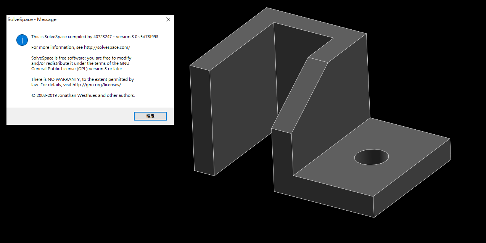

week2-5 <<
Previous Next >> week10-14
Week6-9
week6
1.到課程網站中解壓縮web_vrep2與V-REP3
2.打開V-REP3內的應用程式
3.導入web_vrep2的two_wheeler.ttt檔案
4.打開web_vrep2內的app.py按下GO
5.複製網址打開網頁
6.操作車子
教學影片
week7
1.到E:\tmp\solvespace\build\src\CMakeFiles\solvespace.dir內刪除obj檔案
2.E:\tmp\solvespace\src尋找slovespace.cpp檔案進行編輯
3.搜尋GPL 並把上面改成compiled by 自己的學號
4.再進入E:\tmp\solvespace\build，輸入指令cmake .. -G "MinGW Makefiles" -DCMAKE_BUILD_TYPE=Release
5.輸入另一個指令mingw32-make
6.到E:\tmp\solvespace\build\bin裡面打開slevespace.exe
7.點選Help內的About確認是否編譯完成
solvespace零件繪製

week8
(1)
1.打開LEO並且把pelican.leo拖進去
2.到pelican設定的@edit貼上自己的biog網址
3.對local-blog按右鍵Goto Script 複製裡面指令
4.到自己資料夾內輸入這段指令
5.到近端確認是否完成
(2)
1.首先先把start複製下來
2.到2019/data/webots貼上剛剛複製的start
3.把剛剛複製的改名並且拖到編輯器裡面
4.增加set path_webots=%Disk%:\Webots_2019b_rev1\msys64\mingw64\bin;%Disk%:\Webots_2019b_rev1\msys64\usr\bin
5.並在path=%..這段後面新增%path_webots%
6.在下面再新增一段start Y:\Webots_2019b_rev1\msys64\mingw64\bin\webots.exe
7.啟動
week2-5 <<
Previous Next >> week10-14